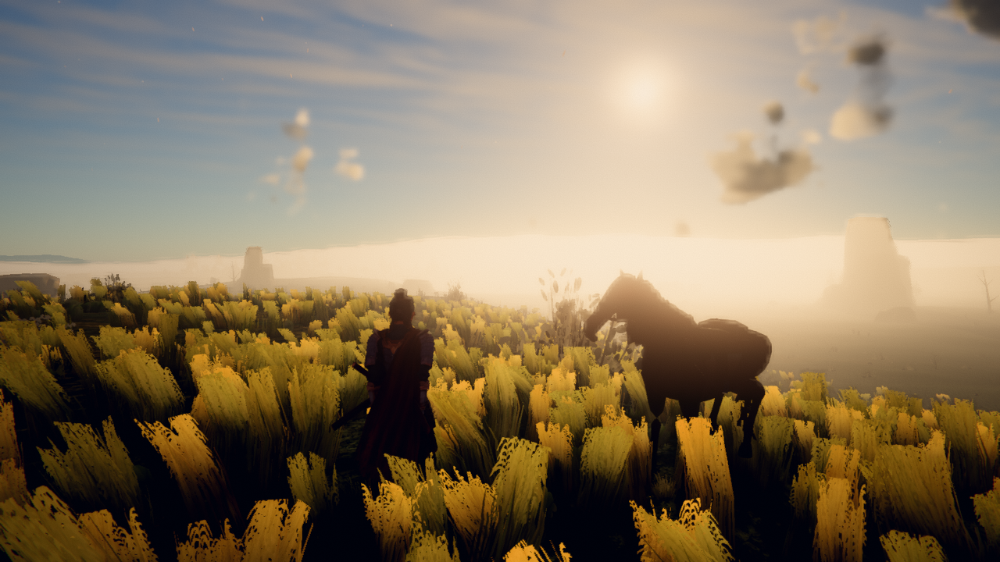
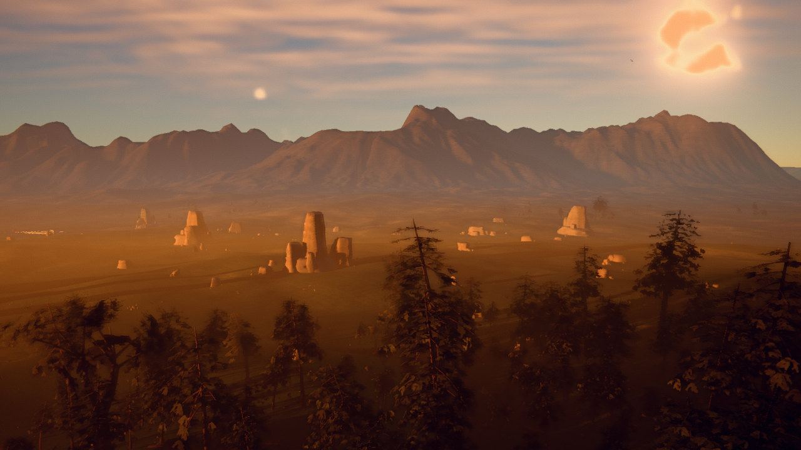
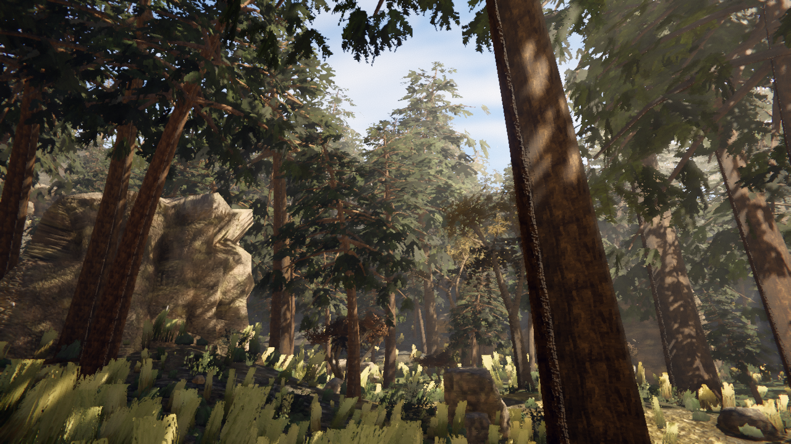
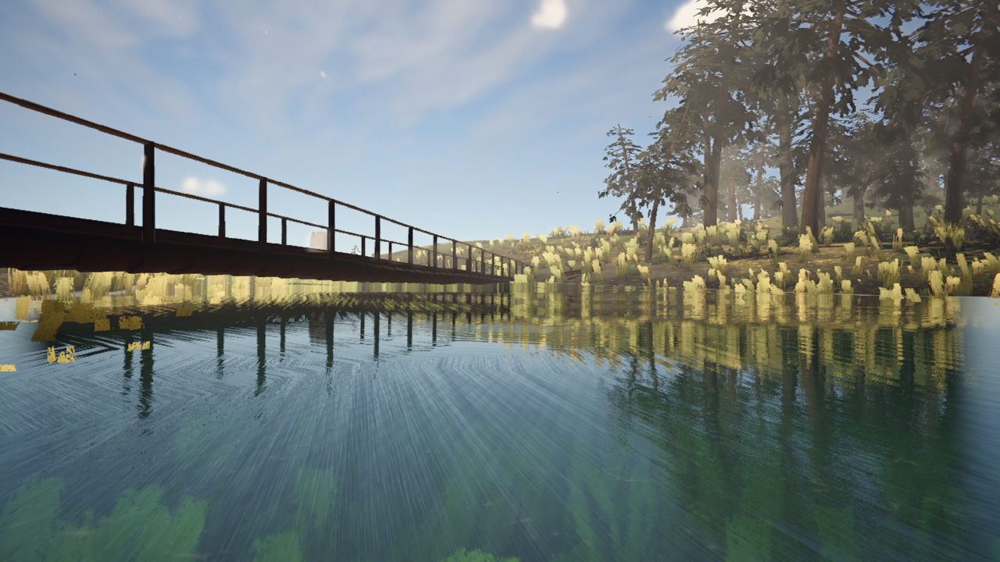
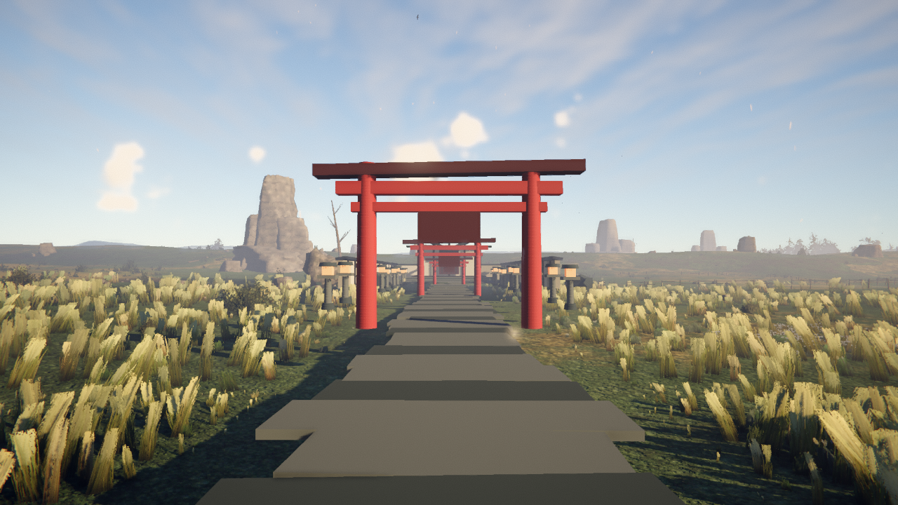

The director page refreshes every 45 seconds. These are fresh frames from the actual current game. Canonical capture, motion capture, and 40-pose adversarial scouting all reach window.__GAME.ready with zero page errors.
Wave 7 actual output · fresh 01:37 EDT





North stars


Gauntlet log
Official staged capture inspected side by side. Ours loses decisively; the single biggest gap is the absence of a dense, strongly backlit golden field around a dark samurai silhouette.
Ronin GLB/state controller, lower wider camera, rolling gold/green ecology, tall pines, pampas and white flower drifts, stronger rim light/cool shadow grade, petals, calmer water, shrine precinct, lantern path and a log bridge. Production build passes.
Single gap: continuous light-catching vegetation volume. Returned to ecology; near meadow now holds a tighter 0.7–1.2 m sward with warmer tip transmission, dark roots, and no added draw calls.
Single gap: shrine read as an open primitive blockout. Returned to builder; added enclosing plaster/timber walls, broad irregular stone forecourt and stair, real budgeted lantern lights, then merged the precinct to eleven static draws.
Single gap: staged mount track is effectively static. Returned to builder; the visible ronin now commits the left foot/hand first, sweeps the right leg over the croup, braces through the torso and reverses support order on dismount. The named asset clip remains active beneath the overlay.
Fresh player pass unified the boot, pause menu, loading language, location titles, travel hints and soundscape around Golden Field / 黄金野. Shrine bells, bamboo clack, birds and insects replace saloon/anvil/wagon identity along the intended path.
capture:fast reaches the new no-port disk route, then Chromium is terminated by macOS Mach-port permission denial (1100/SIGTRAP). motion shares that path; scout is likewise blocked. No stale screenshot is being relabeled as current.
A clean-context source audit found the largest remaining functional gap: the log bridge was scenery only. Player and horse grounding still followed the streambed, so the promised crossing could not actually be ridden.
The controller tests crossed, but the critic rebuilt the production terrain and found the 46 m cap left both visible plank ends in live water. The physics-only feather continued beyond the mesh, so the crossing was still not honestly bank-to-bank.
The bank-to-bank span was correct, but the visible boards were flat boxes while the capsule followed a continuous hidden slope between board centres. Feet and hooves could float or intersect on the approaches.
The Terrain query is piecewise identical to every flat board top, with no yaw or overlap ambiguity. An independent production probe built a 61 m bridge across a 55 m wet span: all 91 merged plank tops matched within 0.000002 m, both controllers crossed both ways, support stopped at the mesh, stream data stayed unchanged, and teardown cleaned the override. Tests pass 3/3; the production build passes.
At 00:20 EDT, capture:fast, motion, and scout produced zero new files. Bundled and system Chromium fail the managed macOS launcher boundary; the only single-process WebGL2 mode never reaches the game's ready signal. Existing frames remain explicitly pre-wave evidence, so no blind visual winner is declared.
Local-port capture recovered without game changes. Canonical capture produced 10/10 frames with zero errors; motion produced 144 frames; scout completed 40 deterministic adversarial poses. The tooling now honors the last repeated CLI option, so npm defaults can be overridden into timestamped evidence folders.
Fresh blind critic compared the actual 01:03 capture with field_9 and field_16. Reference wins decisively. Single gap remains the same: no authored dark rider/foreground silhouette against a glowing atmospheric corridor. Returned for a deeper sun/route/camera staging pass.
Live keyboard traversal on the authored town-to-shrine axis stalled around 30.85 m and 17.65 m from the precinct. An oversized lantern and boulder cluster then occluded the ronin, camera and torii. Single gap returned to the route builder: clear the playable axis and third-person sightline.
The current forest interior has the dominant temporal defect: sigma 0.0373 with 46.4% of pixels boiling under a static camera. This remains queued behind the active one-gap lighting and route rounds.
Sun-facing spawn and capture staging increased player-to-corridor separation from 2.6× to 9.6×. The next blind critic still chose the references 3–0: the remaining single gap was cohesive volumetric depth.
Layered haze, canopy-aware fill and broad side-light shafts made the forest depth visible. Fresh critic still chose the references: the single gap sharpened to overexposed airlight flattening material detail and local contrast. Round 4 is active.
Static-camera sigma fell 0.03730 → 0.01799 and boiling area 46.4% → 23.2%, a 51.8% / 50.0% reduction. Dolly continuity held. The strict 0.004 gate still fails, so this piece is not passed.
The route no longer stalls, but the first re-critic found the ronin sinking into raised stairs. The builder added a query surface exactly matching all approach slabs, five stair tops, platform and timber deck; 840 sampled points now match with zero error and a production capsule crosses. Fresh play re-critique is active.
Lower airlight restored local material detail, but the fresh 01:37 blind critic still chose the references across all three comparisons. Single gap remains cinematic golden-hour depth: the player horizon is white, the forest reads neutral daylight, and the vista distance is uniformly orange instead of layered warm/cool silhouettes. Capture is 10/10 clean; boot is 6.305 s.
Thirty fresh static, dolly and sun-cycle frames confirm the prior stabilization is real but insufficient: sigma is 0.01842 against the 0.004 gate and 23.207% of pixels boil. Dolly pop ratio 1.471 and sun-step ratio 1.043 pass. The single remaining temporal gap is foliage-and-shadow boil under a locked camera.
The closed sanctuary now owns a solid, camera-queryable door-plane collider plus explicit endpoint/focus semantics. A six-second sustained-sprint regression stops on the deck, remains grounded and cannot penetrate; the hot terrain query is allocation-free. Independent live traversal is active before this is counted as passed.